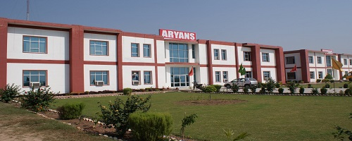

ABOUT COLLEGE

Marwari College, Ranchi was established in the year 1963 by the Marwari Shiksha Trust to facilitate higher education for the young and promising students of society, specially the tribes and downtrodden. This premier college of Jharkhand State came into existence with sincere and incessant efforts of Late Ganga Prasad Budhia.